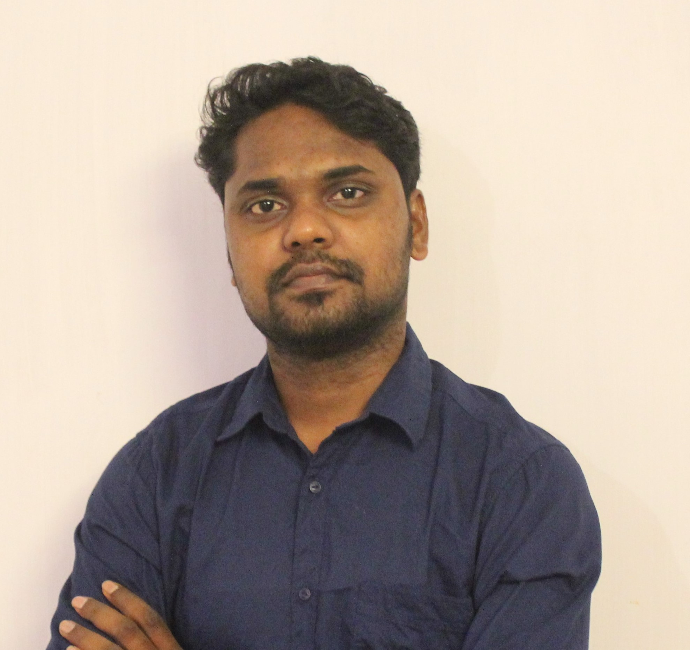

Building AI-Powered Earth Intelligence for Data-infromed Decision-Making
Collaborate
Building AI-powered EO-Analytics and Advisory Platforms
Crop monitoring
Crop identification
Precision agriculture
Forest health
Restoration
Biodiversity
Mangrove monitoring
Health Assessment
Blue carbon
Urban growth analytics
Blue-Green Infra
Urban Planning
Climate risk
Extreme weather
Flood/ Drought
📧 das.pulakesh1987@gmail.com
Interested in collaboration? Let's connect.